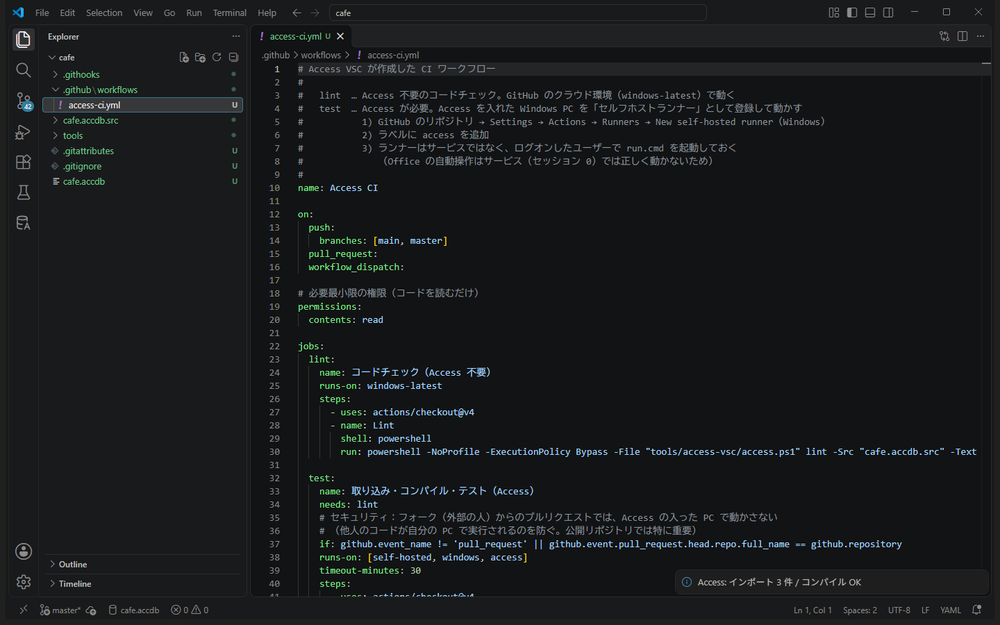
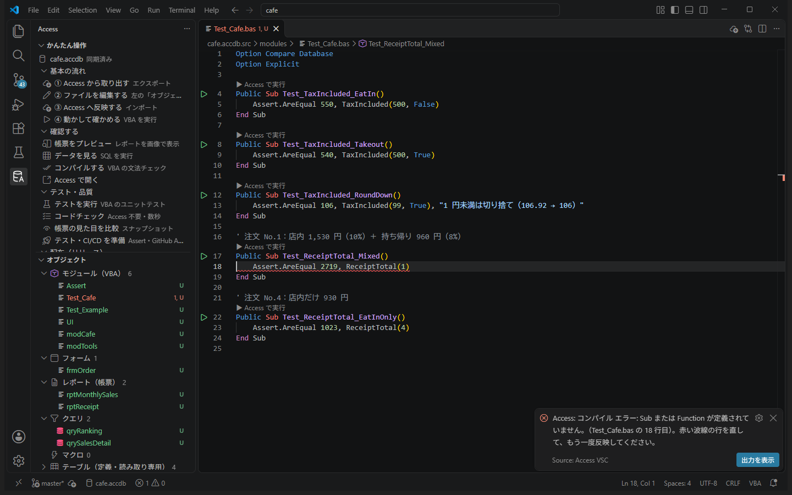
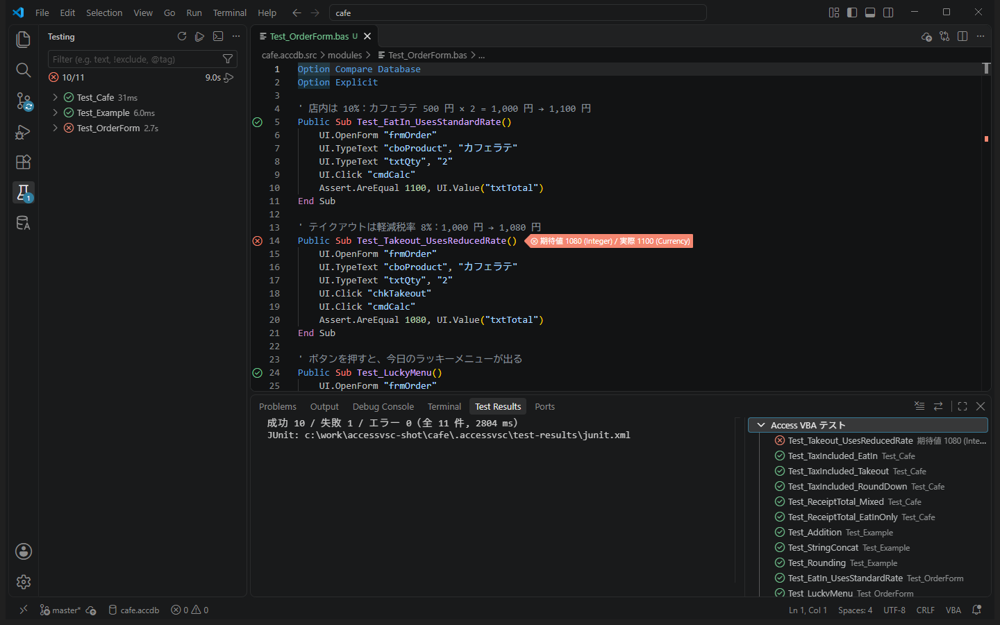
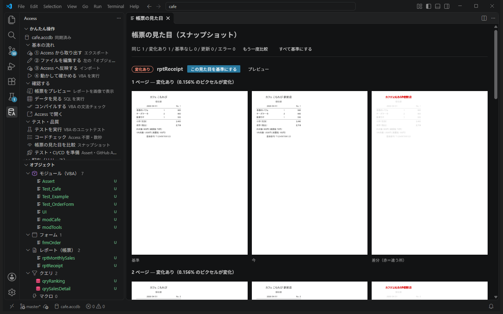

TUTORIAL ・ 上級編
上級編：自動テストと CI/CD
手で確かめていたことを自動テストにして、変更のたびに機械が確かめる仕組みを作ります。テストを先に書いて関数を作り、注文画面をキーボード操作で確かめ、帳票の見た目の変化を検出し、最後に .accde をお店の PC に配ります。
0. 準備 5 分
- 新しい練習用サンプルを作って開くAccess アイコン →「その他」→「練習用サンプルを作る」（既にあれば「新しく作る」）→「開く」。
- 「① Access から取り出す」
このサンプルには不具合が残っています注文画面の「テイクアウトでも税率が 10% のまま」という不具合（中級編の案件 1）は、まっさらなサンプルでは直っていません。3 の UI テストで、これをテストで見つけてから直します。
1. テストの準備 5 分
ゴール：テスト用のモジュールと、CI/CD のファイル一式を追加し、例のテストを動かす。
- 「テスト・品質」→「テスト・CI/CD を準備」「git を始めますか？」と聞かれたら［git を始める］。次のものが追加されます。
ファイル 役割 modules/Assert.basテストで値を確かめる（ Assert.AreEqual 期待値, 実際など）modules/UI.basフォームを操作するテスト用（フォームがある DB だけ） modules/Test_Example.basテストの例 .github/workflows/access-ci.ymlGitHub Actions の設定 .githooks/pre-commitコミット前のコードチェック tools/access-vsc/CI で使うスクリプト一式 - 「反映してテストしますか？」→［反映してテスト］左に「テスト」の画面が開き、例のテスト 3 つが ✔ になります。

「テスト」の画面で、Test_Example の 3 つが ✔ になっている。
2. テストを先に書く（TDD） 15 分
ゴール：「どうなれば正しいか」をテストで先に決めてから、関数を作る。
作るのは、レシートの合計（税込）を求める関数 ReceiptTotal です。インボイスのルールでは、税率ごとに合計してから、それぞれ 1 回だけ端数を処理します。1 行ずつ税を計算して足すと、合計が 1 円ずれることがあります。
- 先にテストを書く
modulesにTest_Cafe.basを作り、次を書いて保存。Option Compare Database Option Explicit Public Sub Test_TaxIncluded_EatIn() Assert.AreEqual 550, TaxIncluded(500, False) End Sub Public Sub Test_TaxIncluded_Takeout() Assert.AreEqual 540, TaxIncluded(500, True) End Sub Public Sub Test_TaxIncluded_RoundDown() Assert.AreEqual 106, TaxIncluded(99, True), "1 円未満は切り捨て（106.92 → 106）" End Sub ' 注文 No.1：店内 1,530 円（10%）＋ 持ち帰り 960 円（8%） Public Sub Test_ReceiptTotal_Mixed() Assert.AreEqual 2719, ReceiptTotal(1) End Sub ' 注文 No.4：店内だけ 930 円 Public Sub Test_ReceiptTotal_EatInOnly() Assert.AreEqual 1023, ReceiptTotal(4) End Sub - 反映する → 失敗する（Red）「コンパイル エラー: Sub または Function が定義されていません。」
ReceiptTotalをまだ作っていないので当然です。テストが「まだできていない」ことを教えてくれました。 - 関数を作る
modCafeの最後に足して保存。' レシートの合計（税込）。税率ごとに合計してから、それぞれ 1 回だけ端数を切り捨てる Public Function ReceiptTotal(ByVal orderId As Long) As Currency Dim reduced As Currency Dim standard As Currency reduced = Nz(DSum("Amount", "qrySalesDetail", "OrderID=" & orderId & " AND Takeout=True"), 0) standard = Nz(DSum("Amount", "qrySalesDetail", "OrderID=" & orderId & " AND Takeout=False"), 0) ReceiptTotal = reduced + standard + Int(reduced * 0.08) + Int(standard * 0.1) End Function - 反映して「テストを実行」→ すべて ✔（Green）レシートの帳票に出ている合計（No.1 は 2,719）と同じ値を、関数でも計算できるようになりました。

Test_Cafe の 5 つと Test_Example の 3 つ、合わせて 8 つが ✔。
テストは DB のコピーで動きますテストは、データベースのコピーの上で実行されます。テストの中でデータを書き換えても、元の cafe.accdb は変わりません。注文データを使うテストも安心して書けます。
3. 画面を操作する UI テスト 15 分
ゴール：注文画面を「キーボードで操作するように」動かすテストで、不具合を見つけて直す。
UI モジュールを使うと、テストの中でフォームを開き、入力し、ボタンを押せます。人がキーボードで操作するのと同じなので、ボタンのクリックや更新後処理のイベントも実際に動きます。
modulesにTest_OrderForm.basを作って保存Option Compare Database Option Explicit ' 店内は 10%：カフェラテ 500 円 × 2 = 1,000 円 → 1,100 円 Public Sub Test_EatIn_UsesStandardRate() UI.OpenForm "frmOrder" UI.TypeText "cboProduct", "カフェラテ" UI.TypeText "txtQty", "2" UI.Click "cmdCalc" Assert.AreEqual 1100, UI.Value("txtTotal") End Sub ' テイクアウトは軽減税率 8%：1,000 円 → 1,080 円 Public Sub Test_Takeout_UsesReducedRate() UI.OpenForm "frmOrder" UI.TypeText "cboProduct", "カフェラテ" UI.TypeText "txtQty", "2" UI.Click "chkTakeout" UI.Click "cmdCalc" Assert.AreEqual 1080, UI.Value("txtTotal") End Sub ' ボタンを押すと、今日のラッキーメニューが出る Public Sub Test_LuckyMenu() UI.OpenForm "frmOrder" UI.Click "cmdPick" Assert.IsTrue UI.Form.lblPick.Caption Like "【*】今日のラッキーメニューは「*」！" End Sub ' 各テストの後でフォームを閉じる Public Sub TestTeardown() UI.CloseForm "frmOrder" End SubUI.TypeTextは入力して Tab で確定、UI.Clickはボタンを押す（チェックボックスなら切り替え）です。- 反映して「テストを実行」テストの間、タスクバーに Access が出ます（画面の外で動くので、触らずに待ちます）。Test_Takeout_UsesReducedRate だけ ✘ になり、「期待値 1080 / 実際 1100」と表示されます。初級編で見つけた不具合を、テストが見つけました。
- 不具合を直す
frmOrderのファイルでTaxIncluded(Me.txtSubtotal, False)を探し、TaxIncluded(Me.txtSubtotal, Nz(Me.chkTakeout, False))に直して保存（中級編の案件 1 と同じ修正です）。 - 反映してテスト → すべて ✔これで、今後だれかがこの計算を壊したら、テストがすぐに教えてくれます。

直す前は Test_Takeout_UsesReducedRate が ✘（実際 1100）、直した後は全部 ✔。
UI テストのコツ
- 値を
Forms!frmOrder!txtQty = 2のように直接入れると、更新後処理などのイベントは動きません。画面の動きを確かめたいときはUI.TypeTextを使います - ボタンで MsgBox が出ても、自動で答えます（確認の質問には安全側の「キャンセル」／「いいえ」）
- InputBox や
acDialogで開くフォームは止まってしまうので、テストでは開かないようにします - 中級編の「自動で再計算」もやったなら、「計算」ボタンを押さずに金額が変わることもテストできます
4. 帳票の見た目を比べる 10 分
ゴール：帳票の見た目を基準として記録し、変わったときに差分を見る。
- 「テスト・品質」→「帳票の見た目を比較」初回は 2 つとも「基準なし」です。画像を確認して［すべて基準にする］。基準の画像は
cafe.accdb.src/snapshotsに保存され、git で記録できます。 - レシートの店名を変える
rptReceiptのファイルでCaption ="カフェ こもれび"をCaption ="カフェ こもれび 駅前店"に変えて保存 → 反映。 - もう一度「帳票の見た目を比較」
rptReceiptが「変化あり」、rptMonthlySalesは「同じ」。変わった所が赤で示されます。 - 意図した変更なら［この見た目を基準にする］意図しない変化なら、原因を探して直します。

店名を変えたレシートだけが「変化あり」になった。
どんなときに役立つ？クエリや VBA の関数を直したら、思わぬ帳票の数字や配置が変わっていた、という事故を防げます。印刷日付のように毎回変わる項目がある帳票は、リファレンスの「帳票スナップショット」にあるしきい値で調整します。
5. 整形とコミット前チェック 10 分
ゴール：コードの見た目をそろえ、問題のあるコードがコミットされないようにする。
整形
- わざと字下げを崩す
modCafeのTaxRateの中の行の先頭の空白を消して保存。問題パネルに「インデントが整っていません」（情報）が出ます。 - Shift+Alt+F（ドキュメントのフォーマット）字下げが元どおりにそろいます。変わるのは行頭と行末の空白だけです。AI が書いたコードも、これでそろえられます。
コミット前チェック
- Access に入らない文字を書いてみる
modCafeのPickOfTheDayの「！」の後ろに絵文字「☕」を足して保存。問題パネルに「Shift-JIS で表せない文字」（エラー）が出ます。Access の VBA は Shift-JIS なので、反映すると「?」に化けてしまいます。 - このままコミットしてみる［ソース管理］でコミットすると、「コードチェックでエラーがあります」で止まります。間違いが記録に入るのを防ぐ、コミット前のチェックです。
- 絵文字を消して保存し、コミット今度はコミットできます。
整形で字下げがそろい、エラーがある間はコミットが止まった。
6. GitHub Actions 10 分（読むだけでも OK）
ゴール：push したら自動でチェック・テストが動く仕組みを知る。
1 で作られた .github/workflows/access-ci.yml には、2 つの仕事（ジョブ）が書かれています。
| ジョブ | やること | 動く場所 |
|---|---|---|
| lint | コードチェック（Access 不要） | GitHub のクラウド（そのまま動く） |
| test | .accdb にソースを反映 → コンパイル → テスト（UI テストも）→ 結果を表示 | Access を入れた Windows PC（セルフホストランナー） |
- GitHub に非公開のリポジトリを作って push［ソース管理］の［ブランチの発行］から作れます。
cafe.accdbもコミットしておきます（CI はコミットされた .accdb にソースを反映してテストします）。 - Actions タブを見るlint のジョブが動き、✔ になります。
- （任意）test を動かすAccess の入った PC を、GitHub の Settings → Actions → Runners でセルフホストランナーとして登録し、ラベル
accessを付けます。サービスではなく、ログオンしたユーザーでrun.cmdを起動しておきます（Office の自動操作はサービスでは動かないため）。
公開リポジトリでは注意セルフホストランナーでは、push されたコードが自分の PC で動きます。テンプレートは、フォーク（他人）からのプルリクエストでは test を動かさない設定にしてありますが、公開リポジトリでは Settings → Actions で「外部のコントリビューターのワークフローに承認を必須にする」も設定してください。
7. お店の PC に配布する 15 分
ゴール：.accde を作って共有フォルダに公開し、利用者側で最新版が起動することを確かめる。
本番では、お店の PC から見える共有フォルダ（例：\\server\share\Komorebi）に置きます。ここでは練習として、自分の PC のフォルダを共有フォルダに見立てます。
- 配布先のフォルダを作るエクスプローラーで、例えば
C:\work\cafe-shareを作ります（配布先は先に存在している必要があります）。 - 「配布」→「配布の設定」アプリ名
Komorebi、配布先に作ったフォルダ、リンクテーブルは「そのまま」。access-deploy.jsonができます。 - 「リリースを作成」版番号に
1.0.0。版番号の書き込み → コンパイル →dist/Komorebi_1.0.0.accdeが作られます。 - 「配布する」今作った
Komorebi_1.0.0.accdeを選び、確認して公開。配布先にStart-Komorebi.cmd（起動用）とapp/・releases/ができます。 Start-Komorebi.cmdをダブルクリック利用者の PC にコピーされて、アプリが起動します（.accde なので、コードやデザインは変更できません）。ナビゲーション ウィンドウからfrmOrderを開いて、テイクアウトの計算が直っていることを確かめたら閉じます。- 更新してみる何か直して反映 → 版番号
1.0.1でリリースを作成 → 配布。もう一度Start-Komorebi.cmdを起動すると、新しい版に入れ替わってから起動します。
配布先の Start-Komorebi.cmd からアプリが起動し、更新を配布すると次の起動で新しい版になった。
配布は人が行うAI は .accde の作成（
access_build）まではできますが、配布はしません。利用者に影響する操作は、人が確認してから行う決まりにしています。8. まとめ
| 仕組み | 確かめること | いつ動く |
|---|---|---|
| ユニットテスト（Assert） | 関数の計算が正しいか | 「テストを実行」・CI |
| UI テスト（UI） | 画面の操作とイベントが正しく動くか | 「テストを実行」・CI |
| 帳票スナップショット | 帳票の見た目が意図せず変わっていないか | 「帳票の見た目を比較」・CI |
| コードチェック・整形 | Shift-JIS・宣言・字下げ・レイアウト | 保存したとき・コミット前・CI |
| 配布 | 版番号つきの .accde を、利用者に安全に届ける | 人が「配布する」を押したとき |